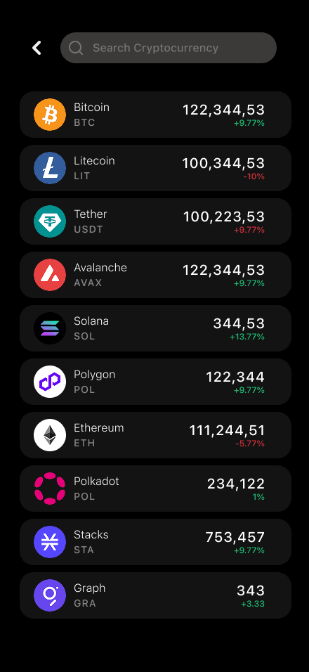
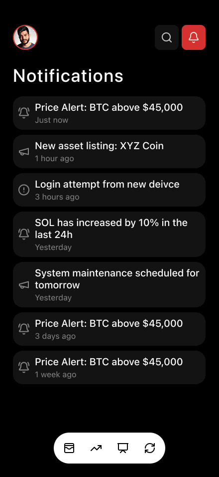
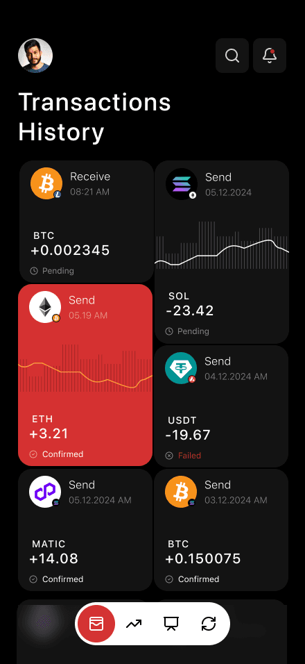
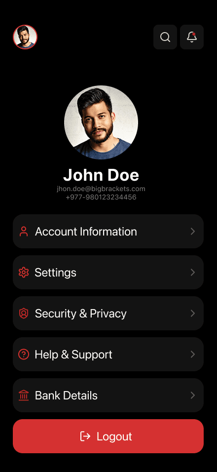
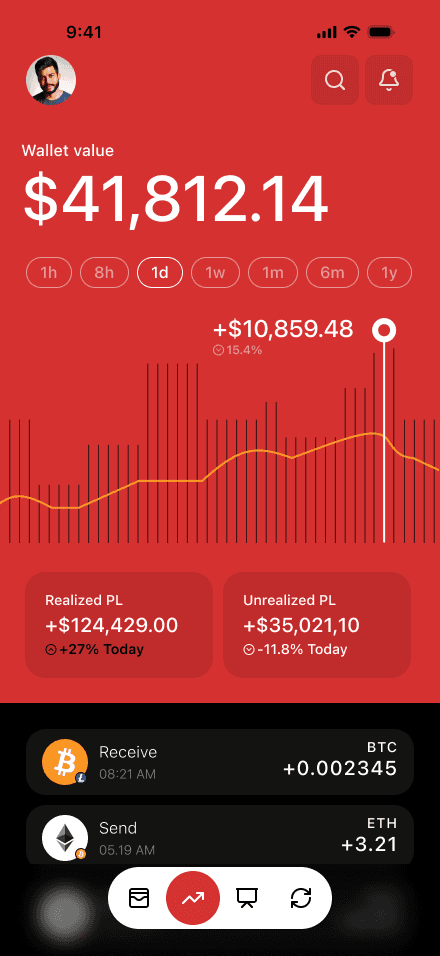

Crypto App
Concept Redesign
01 — IntentClarity for a noisy domain
Cryptocurrency portfolios are dense with numbers competing for attention. This concept redesign set out to simplify portfolio tracking through better layout balance, color hierarchy, and information clarity.
Starting from an existing community concept, I recreated the design in Figma and expanded the user flow with additional screens — Profile, Notifications and Search — to make the experience feel complete while keeping the visual system consistent.






02 — Visual systemDark, sharp, deliberate
A dark theme built on a red and black color scheme — rounded icons, minimal shapes, and red reserved strictly for key actions so attention lands where it matters. Typography uses clean SF Pro for readability across device sizes.
The project sharpened my layout precision and visual hierarchy in dark UI systems — practical experience in adapting and expanding conceptual design work.